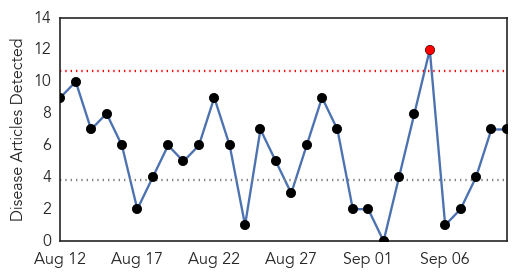

30 Day Trends
Web: 1 alerts, 0 warnings
Twitter: 0 alerts, 0 warnings
Top Articles:
- 0.988
- Louisiana health department reports two more West Nile deaths
- 0.977
- West Nile virus reported in Sugar Land
- 0.972
- West Nile outbreak hits California's Orange County
- 0.920
- Mosquitoes test positive for West Nile virus in Sugar Land
- 0.818
- El Paso health department confirms 5 new cases of West Nile virus; other mosquito-borne illnesses also detected
- 0.790
- 2nd human case of West Nile Virus confirmed in Mass.
- 0.550
- West Nile virus outbreak hits California's Orange County
Top Tweets:
-
No tweets found for Sep 10, 2014
Web/News Articles
Tweets

Article Locations

Article Confidences